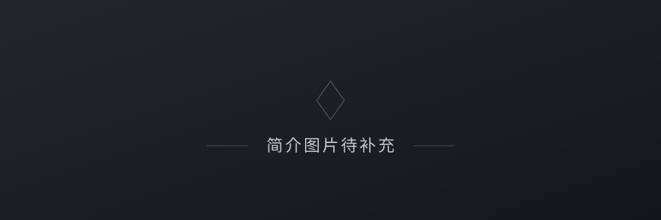
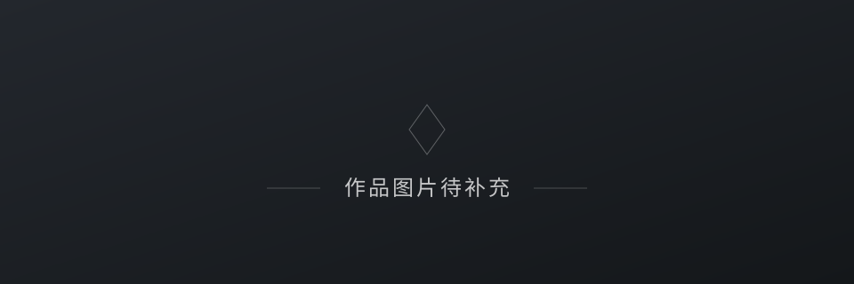
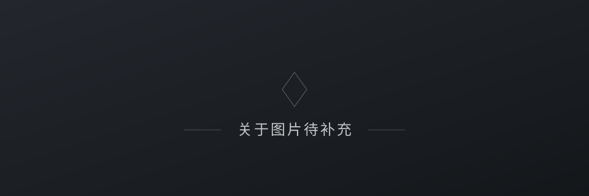

简介

我是林欣宇，中山大学信息管理学院信息管理与信息系统专业的一名本科生。
我对技术、商业和信息世界始终保持着好奇。相比单纯地学习某一门技术，我更感兴趣的是技术如何改变信息的组织与传播，如何帮助人们更高效地获取知识，以及如何真正解决现实生活中的问题。
目前，我正在学习 Python、Java、SQL 等编程技术，也在接触数据分析、信息检索、自然语言处理和人工智能等领域。我希望逐步建立起自己的技术能力，把信息管理的专业知识与计算机技术结合起来，探索更多可能性。
中山大学信息管理学院 · 信息管理与信息系统本科生
对技术、商业和信息世界始终保持着好奇

我是林欣宇，中山大学信息管理学院信息管理与信息系统专业的一名本科生。
我对技术、商业和信息世界始终保持着好奇。相比单纯地学习某一门技术，我更感兴趣的是技术如何改变信息的组织与传播，如何帮助人们更高效地获取知识，以及如何真正解决现实生活中的问题。
目前，我正在学习 Python、Java、SQL 等编程技术，也在接触数据分析、信息检索、自然语言处理和人工智能等领域。我希望逐步建立起自己的技术能力，把信息管理的专业知识与计算机技术结合起来，探索更多可能性。

作品待补充。

在专业学习之外，我也喜欢观察不同城市的产业发展、商业模式和社会现象，关注科技进步对经济与日常生活带来的影响。我相信，理解技术固然重要，但理解技术背后的人、组织和社会，同样重要。
我还在不断尝试和探索。比起急于给自己贴上某种职业标签，我更希望保持学习的能力，认真做好眼前的事情，并在实践中逐渐找到自己的方向。
技术不应该只是少数人的专业工具，也应该成为普通人理解世界、创造价值的手段。
喜欢的句子：「六根清净方为道，退步原来是向前」
联系方式待补充。
邮箱、社交账号等信息待补充。